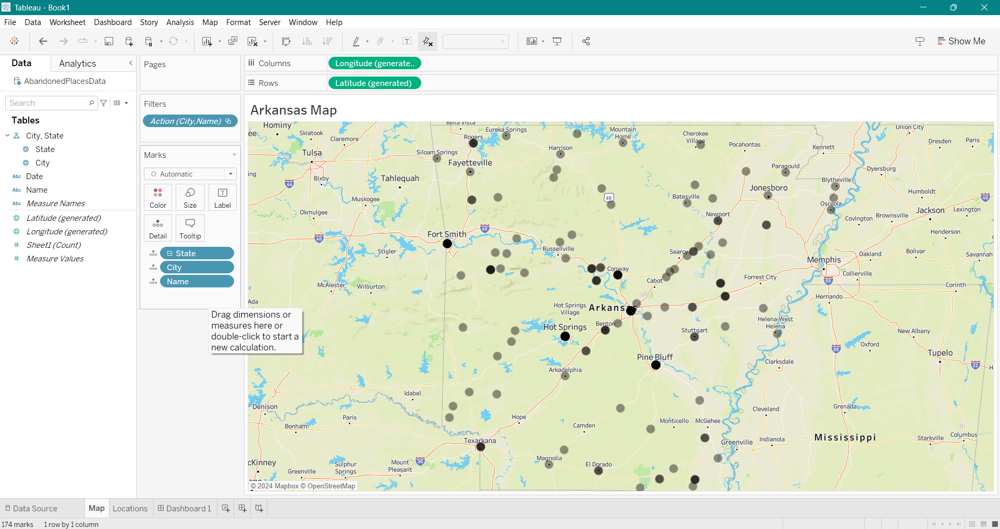
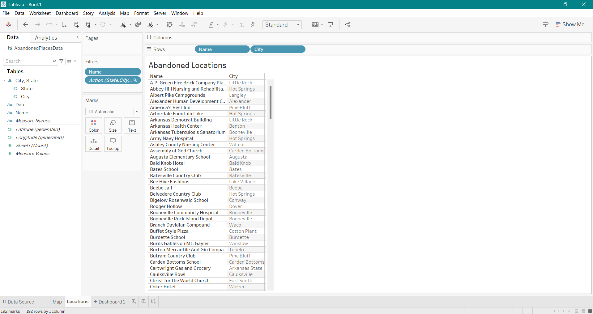

Abandoned Places Project
Web scraping, data cleaning, and an interactive Tableau dashboard mapping abandoned locations.
I started this project when I came across a website while doing research for one of my classes. I wanted a list of all the places on the site along with their locations, but at the time there was no option to export that. So I used web scraping in Python to build the dataset myself. The code I used is embedded below:
Once the data was cleaned and exported to Excel, I loaded it into Tableau to build the visualizations.

I created a Tableau sheet with a map of every location plotted, plus a sheet listing them out.


I combined the two sheets into an interactive dashboard that filters by whichever location the user clicks. It also embeds a Google Search of whatever location is selected on the map or in the table. The dashboard is embedded below: